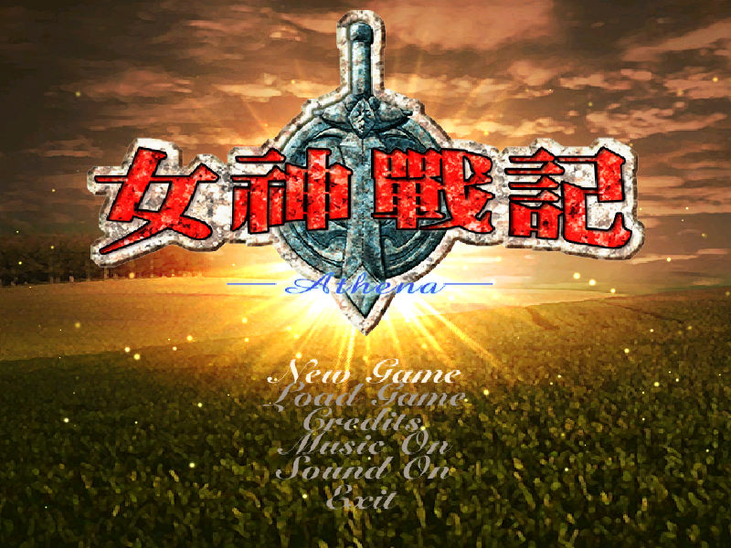
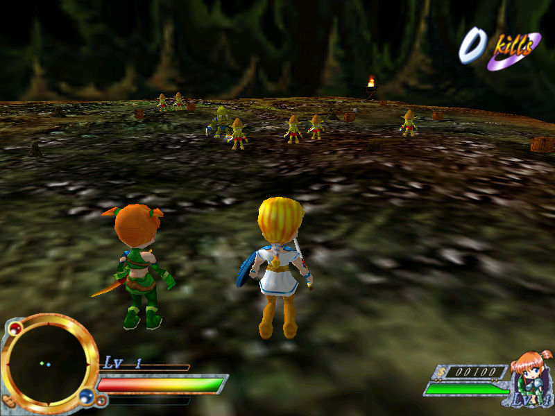

名稱：夢幻天使之女神戰記／女神戰記：冒險天使 (Athena，中文版) 簡介：琪薇2002年出品的動作砍殺遊戲，兼具部份角色扮演元素，由智冠代理發行 [待補]。

保護：光碟，破解碼（放入光碟才有背景音樂）： Athena.exe 75 20 50 50 8B 44 EB -- -- -- -- -- 備註：本遊戲雖然為2CD，但第二片遊戲片裡已包含第一片的安裝片，因此也可看成是1CD。 備註：本遊戲有2002/2/3版與2003/7/8版等兩種光碟（以唯一差別的disk1.pak日期為準）， 後者的兩張Logo圖增加了智冠，其餘內容均相同。 操作： Space = 確定 Esc/Enter = 系統選單 Z = 跳躍 X = 攻擊 C = 奔跑